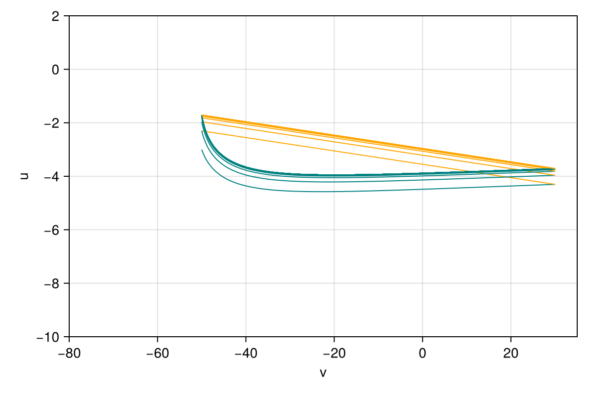
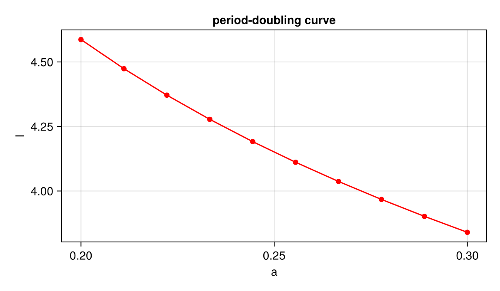

Izhikevich neuron
A hybrid system with a firing reset. The membrane potential $v$ and the recovery variable $u$ follow
\[\dot v = 0.04 v^2 + 5 v + 140 - u + I, \qquad \dot u = a (b v - u)\]
until $v$ reaches 30 (firing), when $(v, u)$ jumps to $(c, u + d)$. Sampling $u$ right after each firing gives a one-dimensional Poincaré map built from four modes (Miino 2024):
m0(1 → 2): lift $u$ to the reset point $(c, u)$;m1(2 → 2): integrate the ODE until the border $v = 30$;m2(2 → 2): firing jump $(v, u) \to (v - 30 + c, u + d)$;m3(2 → 1): keep $u$.
Python counterpart: examples/izhikevich.py of mappy-ds.
using MappyDS, CairoMakie, StaticArrays
izhikevich = VectorField(2; name = :izhikevich) do y, p
v, u = y
return SVector(0.04 * v^2 + 5 * v + 140 - u + p.I, p.a * (p.b * v - u))
end
fire_border = Border((y, _) -> y[1] - 30, 2; direction = 1, name = :fire)
jump = Mapping((y, p) -> y + SVector(p.c - 30, p.d), 2; name = :jump)
lift = Mapping((u, p) -> SVector(p.c, u[1]), 1, 2; name = :lift)
keep_u = Mapping((y, _) -> y[2], 2, 1; name = :keep_u)Mapping(keep_u, dom_dim = 2, cod_dim = 1)The bifurcation analysis below solves systems to a tolerance of 1e-10, so the ODE is integrated more accurately than with the default tolerances.
pmap = PoincareMap(
[
DiscreteMode(:m0, lift),
ContinuousMode(:m1, izhikevich; borders = (fire_border,), reltol = 1.0e-8, abstol = 1.0e-10),
DiscreteMode(:m2, jump; in_trajectory = true),
DiscreteMode(:m3, keep_u),
],
Dict(:m0 => :m1, :m1 => [:m2], :m2 => :m3, :m3 => :m0),
:m0,
)
params = (a = 0.2, b = 0.2, c = -50.0, d = 2.0, I = 10.0)
u0 = -3.0-3.0Orbit
trajectory records the states visited during n iterations of the map; plot_trajectory draws the continuous flow (m1, teal) and the firing jumps (m2, orange; they are recorded because m2 was declared with in_trajectory = true).
styles = Dict(:m1 => LineStyle(; color = :teal, alpha = 1.0), :m2 => LineStyle(; color = :orange, alpha = 1.0))
traj = trajectory(pmap, u0, params; n = 30)
fig = Figure(; size = (600, 400))
ax = Axis(fig[1, 1]; xlabel = "v", ylabel = "u", limits = (-80, 35, -10, 2))
plot_trajectory(traj; ax, styles)
fig
The interactive viewer uses the same styles. Since the map is one-dimensional, a click restarts from the clicked u (the vertical coordinate, scalar_axis = :y); p switches between a and I.
using GLMakie
config = PlotConfig(;
xlim = (-80.0, 35.0), ylim = (-10.0, 2.0), xlabel = "v", ylabel = "u",
param_keys = [:a, :I], scalar_axis = :y, trajectory_style = styles,
)
plot2d(pmap, u0, params, config)Fixed point and its continuation
One iteration of the map, its derivative and the modes visited:
res = image_detail(pmap, u0, params)
res.y, res.jac, res.mode_history([-2.302819732520237], [0.5169423444486779;;], [:m0, :m1, :m2, :m3, :m0])find_cycle finds the fixed point (a periodic firing pattern) and trace_cycle follows it while $I$ decreases to 4.5:
cycle = find_cycle(pmap, u0, params)
steps = trace_cycle(pmap, cycle.y, params, :I, 4.5; resolution = 20)
println("fixed point at I = $(params.I): u = $(cycle.y[1])")
for s in steps
println("I = $(round(s.params.I; digits = 4)) u = $(round(s.y[1]; digits = 6)) multiplier = $(round(real(s.info[:eigvals][1]); digits = 6))")
endfixed point at I = 10.0: u = -1.7159163246737767
I = 10.0 u = -1.715916 multiplier = 0.385652
I = 9.7105 u = -1.841565 multiplier = 0.367651
I = 9.4211 u = -1.969897 multiplier = 0.34815
I = 9.1316 u = -2.101091 multiplier = 0.326938
I = 8.8421 u = -2.235343 multiplier = 0.303761
I = 8.5526 u = -2.372869 multiplier = 0.27831
I = 8.2632 u = -2.513914 multiplier = 0.250206
I = 7.9737 u = -2.65875 multiplier = 0.218978
I = 7.6842 u = -2.807683 multiplier = 0.184038
I = 7.3947 u = -2.961062 multiplier = 0.144634
I = 7.1053 u = -3.11928 multiplier = 0.099797
I = 6.8158 u = -3.282791 multiplier = 0.048249
I = 6.5263 u = -3.452114 multiplier = -0.011724
I = 6.2368 u = -3.62785 multiplier = -0.082473
I = 5.9474 u = -3.8107 multiplier = -0.167315
I = 5.6579 u = -4.001485 multiplier = -0.271068
I = 5.3684 u = -4.20117 multiplier = -0.400993
I = 5.0789 u = -4.410898 multiplier = -0.568514
I = 4.7895 u = -4.632021 multiplier = -0.792569
I = 4.5 u = -4.866134 multiplier = -1.106662Period doubling
The multiplier crosses $-1$ along the branch. Starting from the point where it is closest to $-1$, find_local_bf locates the period-doubling bifurcation ($\theta = \pi$), and trace_local_bf follows it in the $(a, I)$ plane while $a$ increases to 0.3.
multipliers = [real(s.info[:eigvals][1]) for s in steps]
k = argmin(abs.(multipliers .+ 1))
bf = find_local_bf(pmap, steps[k].y, steps[k].params, :I, pi)
println("period doubling at I = $(bf.params.I), u = $(bf.y[1])")
curve = trace_local_bf(pmap, bf.y, bf.params, :I, bf.theta, :a, 0.3; resolution = 10)
println("period-doubling curve ($(length(curve)) points):")
println(" a I")
for s in curve
println(" $(round(s.params.a; digits = 5)) $(round(s.params.I; digits = 5))")
endperiod doubling at I = 4.586862986301968, u = -4.794413537179736
period-doubling curve (10 points):
a I
0.2 4.58686
0.21111 4.47403
0.22222 4.37149
0.23333 4.27769
0.24444 4.19133
0.25556 4.11136
0.26667 4.03692
0.27778 3.96725
0.28889 3.90176
0.3 3.8399fig = Figure(; size = (600, 350))
ax = Axis(fig[1, 1]; xlabel = "a", ylabel = "I", title = "period-doubling curve")
lines!(ax, [s.params.a for s in curve], [s.params.I for s in curve]; color = :red)
scatter!(ax, [s.params.a for s in curve], [s.params.I for s in curve]; color = :red)
fig
This page was generated using Literate.jl.